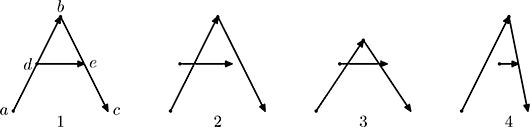
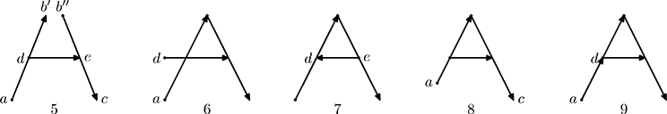

Home Page
F.A.Qs
Statistical Charts
Past Contests
Scheduled Contests
Award Contest
| Online Judge | Problem Set | Authors | Online Contests | User | ||||||
|---|---|---|---|---|---|---|---|---|---|---|
| Web Board Home Page F.A.Qs Statistical Charts | Current Contest Past Contests Scheduled Contests Award Contest | |||||||||
|
Language: Japanese Writing
Description Michael had visited ACM ICPC World Finals 2007 in Tokyo, Japan and became fascinated with Japanese writing. He decided to study hieroglyphs, but in order to check his knowledge he needs a piece of software that can verify correctness of his writing. This program takes a description of a correct shape of the hieroglyph, several Michael’s attempts to write it, and judges each attempt as correct or incorrect. In this problem hieroglyphs are represented as a collection of strokes, each stroke being a straight line on a Cartesian plane. The order of strokes is irrelevant for the hieroglyph shape, but the direction of each stroke is relevant. There are eight relevant directions: straight right, upper-right, straight up, upper-left, straight left, lower-left, straight down, and lower-right. Two writings are considered to represent the same shape if one-to-one correspondence can be established between the strokes and all the endpoints of the strokes, so that direction of strokes and relative positions of pairs of points are preserved. Preservation of relative positions is important for any pair of points, even if they are not connected with a stroke. However, relative positions are important only with respect to eight relevant directions described above. For example, here is a hieroglyph similar to Latin letter A with 5 endpoints connected with 3 strokes and several other correct writings of the same shape:  Note, that intersections of strokes are not relevant. Here are several incorrect writings of the same shape:  These writings are not correct for the following reasons:
Input The first line of the input file contains a single integer n (2 ≤ n ≤ 20) — the number of writings in the input file. It is followed by descriptions of n writings. Each writing starts with a line with a single integer number mi (1 ≤ mi ≤ 100) — the number of strokes in i-th writing. It is followed by mi lines that describe strokes for i-th writing. Each stroke is represented by a line with four integer numbers xaij, yaij, xbij, and ybij (−1000 ≤ xaij, yaij, xbij, ybij ≤ 1000) — coordinates of endpoints. xaij, yaij are coordinates of the beginning of j-th stroke and xbij, ybij are coordinates of the end of j-th stroke. The beginning and the end of the stroke are distinct points. Any two endpoints are connected by at most one stroke. Output Compare the shapes of writings from 2nd to n-th with the shape of the first writing and write to the output file n − 1 lines with the result of each comparison of a single line. Write CORRECT if the corresponding writing represents the same shape as the first one or INCORRECT otherwise. Sample Input 9 3 0 0 10 20 10 20 20 0 5 10 15 10 3 0 0 10 20 10 20 20 0 2 10 13 10 3 0 0 10 15 10 15 20 0 5 10 15 10 3 8 10 12 10 0 0 10 20 10 20 14 0 3 0 0 8 20 12 20 20 0 5 10 15 10 3 0 0 10 20 10 20 20 0 0 10 15 10 3 0 0 10 20 10 20 20 0 15 10 5 10 3 2 4 10 20 10 20 20 0 5 10 15 10 4 0 0 10 20 0 0 5 10 10 20 20 0 5 10 15 10 Sample Output CORRECT CORRECT CORRECT INCORRECT INCORRECT INCORRECT INCORRECT INCORRECT Source | ||||||||||
[Submit] [Go Back] [Status] [Discuss]
All Rights Reserved 2003-2013 Ying Fuchen,Xu Pengcheng,Xie Di
Any problem, Please Contact Administrator